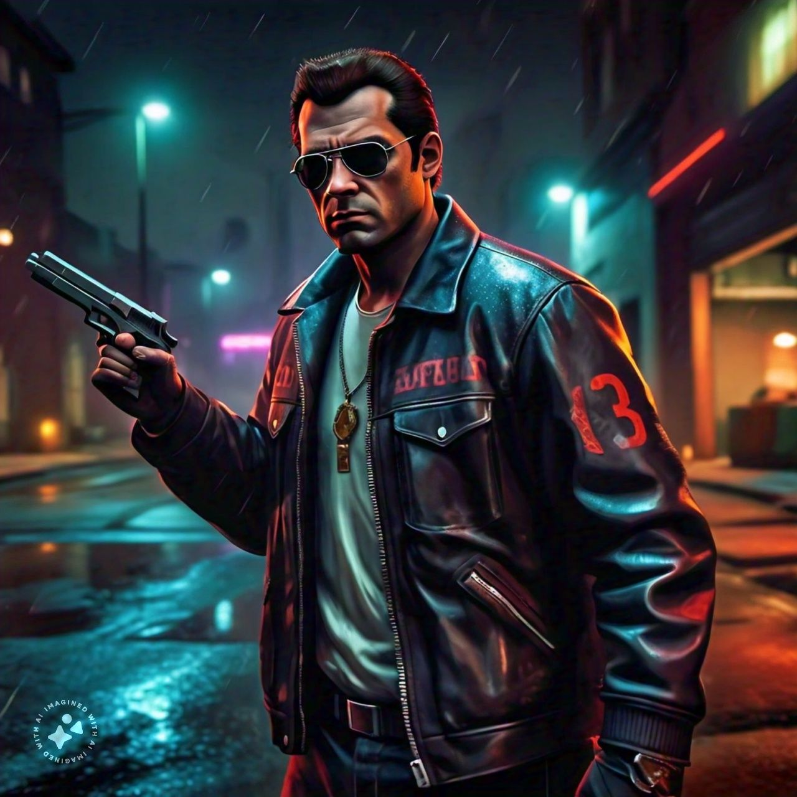
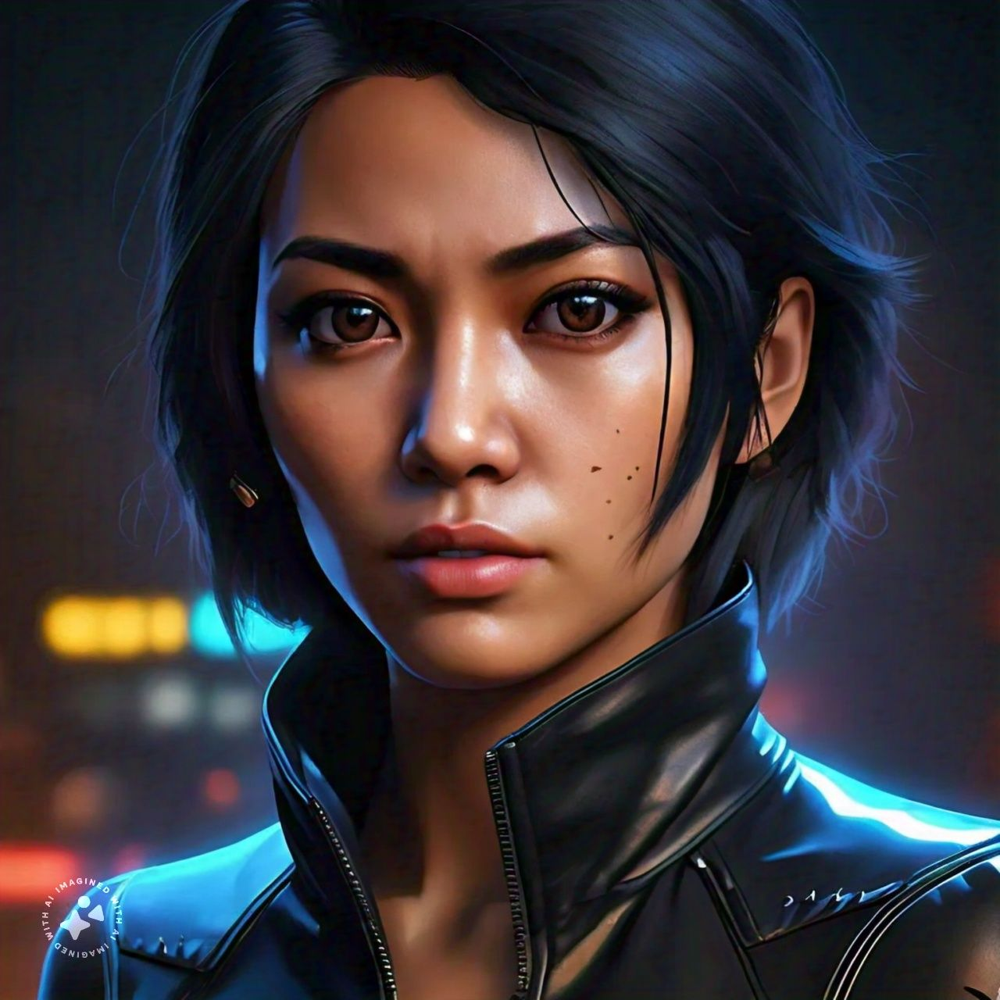
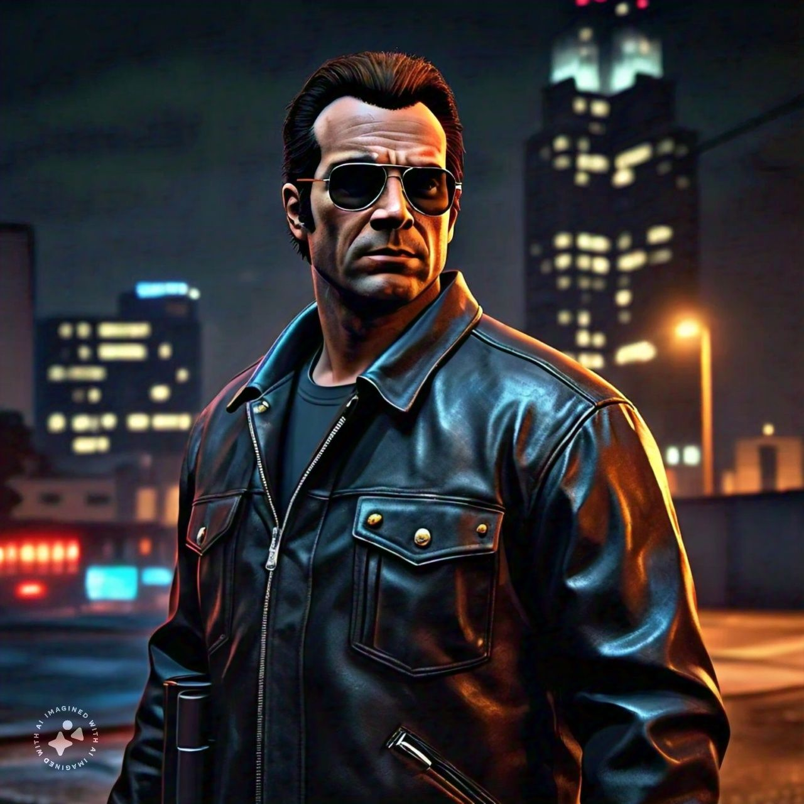

First trailer of GTA6
Screenshot

.jpeg)
.jpeg)
Artifical Intelligence Make Some Image



In the sun-kissed city of Vice City, a metropolis inspired by the vibrant streets of Miami, a complex and dynamic narrative unfolds. Grand Theft Auto 6 introduces a fresh protagonist, a strong and enigmatic woman with a troubled past. Lucia, or potentially Laura, is a former soldier or mercenary, haunted by the ghosts of her previous life. Seeking redemption and a chance to start anew, she finds herself entangled in the dark underbelly of Vice City's criminal world. Lucia's journey begins with her arrival in Vice City, a place where the glamour of the wealthy and the desperation of the poor coexist in an uneasy harmony. With a mysterious past and a penchant for violence, Lucia quickly attracts the attention of various factions vying for power in the city. She becomes embroiled in a web of intrigue, navigating the treacherous landscape of Vice City's criminal organizations. As Lucia delves deeper into the world of Vice City, she encounters a diverse cast of characters, each with their own motivations and agendas. There's the charismatic and ruthless leader of the local drug cartel, the cunning and seductive queenpin of the city's underworld, and the enigmatic and reclusive billionaire with a hidden agenda. Each character plays a significant role in Lucia's story, pushing her towards a destiny that will shape the fate of Vice City. Throughout her journey, Lucia must confront her own demons and make difficult choices that will impact the lives of those around her. She will be forced to navigate the blurred lines between loyalty and betrayal, all while facing the harsh realities of a city consumed by corruption and violence. Along the way, she may discover unexpected allies and uncover hidden secrets that threaten to upend the very fabric of Vice City's criminal underworld. Some rumors suggest that Lucia's story may be connected to the events of Grand Theft Auto 5, with familiar characters making appearances or being mentioned throughout the game. This could potentially create a sense of continuity and shared universe, adding depth and complexity to the narrative. As Lucia navigates the treacherous landscape of Vice City, players will be treated to a rich and immersive experience, complete with a dynamic soundtrack, stunning visuals, and a vast open world to explore. The game promises to deliver improved gameplay mechanics, a wide range of customization options, and a narrative that will keep players engaged and invested in Lucia's journey. Rockstar Games' signature attention to detail and dedication to storytelling will undoubtedly make Grand Theft Auto 6 a masterpiece, pushing the boundaries of what's possible in a video game. With its complex characters, engaging narrative, and immersive gameplay, GTA 6 is poised to be an unforgettable experience that will leave a lasting impact on the gaming world. Please note that this is still speculative, and the actual story may differ. Rockstar Games has yet to confirm any details about the narrative, and fans will have to wait for the game's release to uncover the truth about Lucia's journey and the world of Vice City.
Hello! I'm Sanket jaat, a web developer passionate about creating interactive and dynamic web applications.